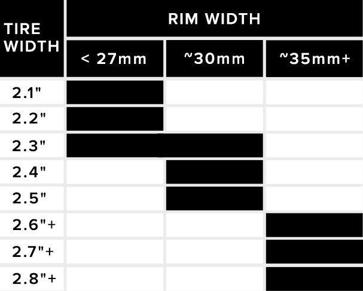

Precious few components can make as immediately noticeable a difference as a great set of tires. However, the past few years have seen an explosion in new options for mountain bikes, which makes it daunting grying to find the right pair of tires for your needs, your terrain, and your preferences. In the Tire Guide, we'll break down the key factors you'll need to consider when deciding on your next setup, and we'll follow up with a handful of our favorites for every rider. Read on the get up to speed with this rapidly evolving, yet widley misunderstood component
Section 1:
Selecting Your Application
Section 2:
Tread Pattern and Rubber Compound
Section 3:
Size and Rim Width
Section 4:
What We're Riding
You're already no doubt aware that tires can be found in a staggering array of options for a wide range of uses. At this point, it's almost a foregone conclusion that most riders have opted for a tubeless setups, which typically offer greater puncture resistance, reduced rolling resistance, and an improved feel for the trail. Accordingly, tubes have been largely relegated to a trailside repair option.
Open / More Images
(sub ~600g)
(600g - 900g)
(900g)
Generally speaking, riders will refer to a given tire by its tread pattern, but tread pattern is only one part of the equation. Don't make the mistake of thinking that a given tread pattern will offer the same handling regardless of the rubber compound. The most popular tread designs are frequently offered in a handful of constructions, in multiple rubber compounds, and also in a range of sizes. But before we go too far, a quick word about tread design.
Open / More Images
In addition to the aforementioned topics, riders will also have to make some choices regarding tire size. Thankfully, this process is fairly straightforward. For most riders in most conditions, tires in the 2.3 - 2.5 inch range will be the right place to start. Cross country racers, as well as smaller, lighter riders, tend to prefer tires in the 2.1 - 2.3 inch range, which typically offer reduced rolling resistance. Riders seeking maximum traction have learned to trust larger volume Plus tires, although what constitutes "Plus" is growing less clear by the day. Whether you consider the current crop of 2.6-2.8 inch tires to be Plus or not, the reality is that many of the latest bikes are offering tire clearance up to 2.8 inches, which will tempt plenty of riders to experiment with going bigger on their next set of tires.
Open
Cross Country - Top Pick
Continental
Race King
For a sweet spot between rolling speed, longevity, and traction in variable conditions, this pairing from WTB is hard to beat. The Vigilante's open tread pattern offers serious grip when it's loose and dusty, while the Trail Boss' tightly spaced knobs maintain a high degree of rolling speed. The 2.3 inch size works best on rims up to 30mm wide, although we've found this combo to be extremely effective on rims as narrow as 25mm. Note that both tires are available in heavier duty casing, also known as the "Tough" version, which riders who suffer frequent flats would do well to consider. The stickier HG rubber compound is worth considering for those demanding more traction.

Vittoria
Mezcal G Plus TNT (Front & Rear)
Meet our gearheads.
Chat, email, or call us at: (888) 276-7130
Competitive Cyclist Gearheads are your resource for all things cycling. They're bike experts with knowledge and experience that's second to none. Whether you're thinking about your next dream build, you need advice on components, or you have questions about an existing order, don't hesitate to contact a Gearhead.